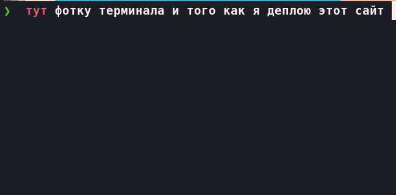

Ich bin ein motivierter IT-Enthusiast mit Schwerpunkt auf Linux, Python und Rust.
Seit meinem 14. Lebensjahr entwickle ich eigene Projekte, die ich weiter unten vorstelle.
Deutsch habe ich mir innerhalb von sechs Monaten von Grund auf selbst angeeignet und die
B1-Prüfung des Goethe-Institut erfolgreich bestanden.
Mein Ziel ist eine duale Ausbildung im IT-Bereich in Deutschland,
um mein technisches Wissen praxisnah weiterzuentwickeln und aktiv im Unternehmen mitzuwirken.
Ich kenne Python und habe Grundkenntnisse in Rust. Ich habe erste Erfahrungen mit REST-APIs gesammelt.
Ich erstelle Webseiten mit HTML und CSS.
Linux ist mein Hauptbetriebssystem. Ich betreibe meinen eigenen Server und deploye darauf meine Projekte.
Ich arbeite mit Git und GitHub.
Ich habe einen MCP-Server entwickelt und nutze KI-Tools produktiv, um die Entwicklung und mein Lernen zu unterstützen.
AICLI ist ein Linux-Terminal-Emulator mit integriertem AI-Assistenten.
Sie hilft Einsteigern, effizient mit der Kommandozeile zu arbeiten.
Technologien und Architektur:
Das Projekt nutzt Rust für die Terminal-Logik und Prozessverwaltung.
Tauri dient als Framework, um die Anwendung als eigenständiges Desktop-Programm bereitzustellen.
Für die AI-Logik wird Python verwendet. Die Terminalanzeige erfolgt über xterm.js,
während HTML/CSS/JS die Benutzeroberfläche und die AI-Seitenleiste realisieren.
Projektstatus:
Frontend und AI-Logik sind vollständig implementiert. Derzeit wird das Backend
integriert, um alle Komponenten zu einer funktionsfähigen Anwendung zu verbinden.
Quellcode: https://github.com/vasiliy-cell/AI-console
Learning Project for Advanced AI Integration Ein minimalistischer MCP Server,
entwickelt als gezieltes Lernprojekt zur tiefgehenden Auseinandersetzung mit AI-Integration
in Entwicklungsumgebungen. Der Server analysiert Projektstrukturen, liest Code,
und schlägt Änderungen in Form von Patches vor - bewusst ohne automatische Ausführung
oder unkontrollierte Systemzugriffe. Dieses Projekt ist der erste Schritt auf dem Weg,
AI-Systeme auf architektonisch hohem Niveau zu verstehen, zu gestalten und sicher in reale
Entwicklungsprozesse zu integrieren.
Quellcode: https://github.com/vasiliy-cell/AICLI-MCP
Eine vollständig selbst entwickelte und eigenständig gehostete Portfolio-Website. Das Projekt umfasst die Frontend-Entwicklung, Serverkonfiguration, Deployment-Automatisierung sowie die Einrichtung einer Produktionsumgebung auf einem gemieteten Linux-Server. Die Website wird eigenständig betrieben und gewartet, einschließlich Umgebungskonfiguration, Updates und Serververwaltung.
